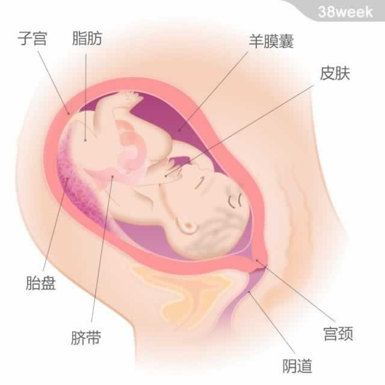

宝宝的重量约为3.25千克，从头部到臀部的长度约为36厘米。
宝宝的重量约为3.25千克，从头部到臀部的长度约为36厘米。
现在，宝宝已经做好了出生的所有准备。他的脂肪层继续变厚，大部分的胎毛已经褪去。他的身长此时约为510毫米，体重约为3200克，相当于一个普通重量的西瓜。宝宝出生时就具备了70多种不同的反应。他会有300块骨头，比普通成人的206块要多，不过随着他的成长，有一些骨头会硬化在一起。
另外，受到母体内孕激素的影响，出生后的男孩和女孩都会有乳腺的发育，甚至还会分泌微量的乳汁。不用担心，出生后不久这种现象就会消失。